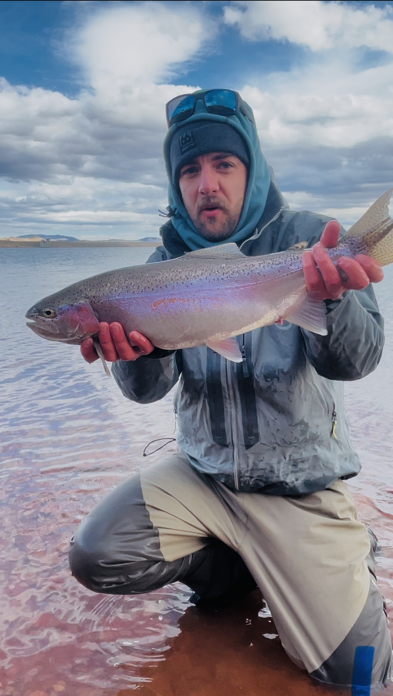

Matthew Presti
Southern Colorado native • Hometown: Pueblo, Colorado
Matthew is a Southern Colorado native who grew up fishing the Arkansas River and exploring the waters of the region from Pueblo to the upper valley. He’s an avid fly fisherman and boater with a style rooted in the classics: reading water, controlling depth, and staying adaptable as conditions change.
After guiding in Northern Colorado and building experience across a range of rivers and stillwaters, Matthew now guides in the Arkansas Valley—especially the home waters of Silver Creek Lakes Club. He enjoys helping anglers become more confident on stillwater: working structure, using deliberate retrieves, and understanding when to switch tactics.
He’s a sucker for big browns, loves a well-planned boat day, and offers guided days on the property plus select Arkansas River trips when conditions align.